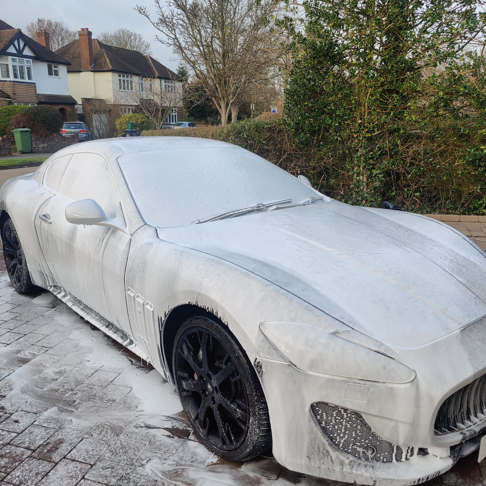
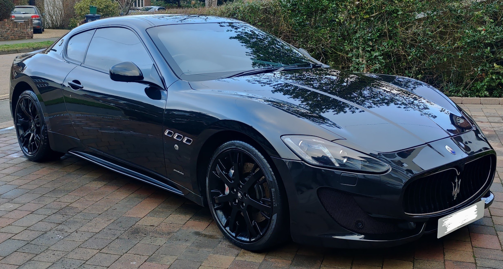
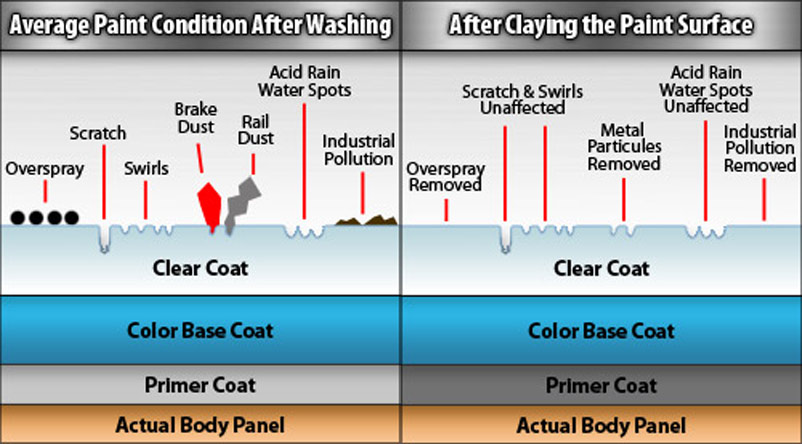
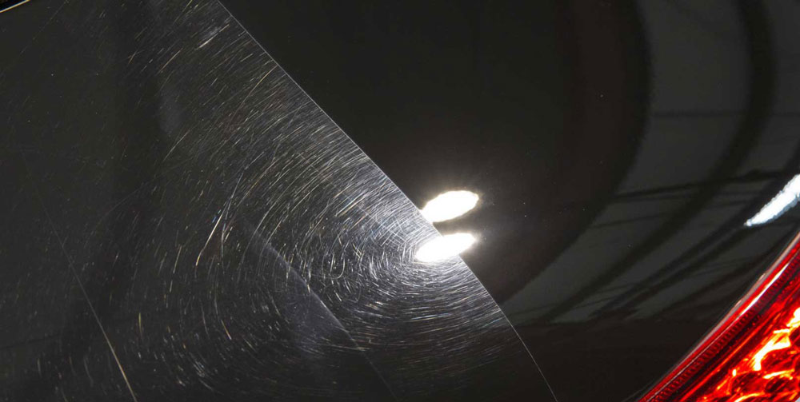
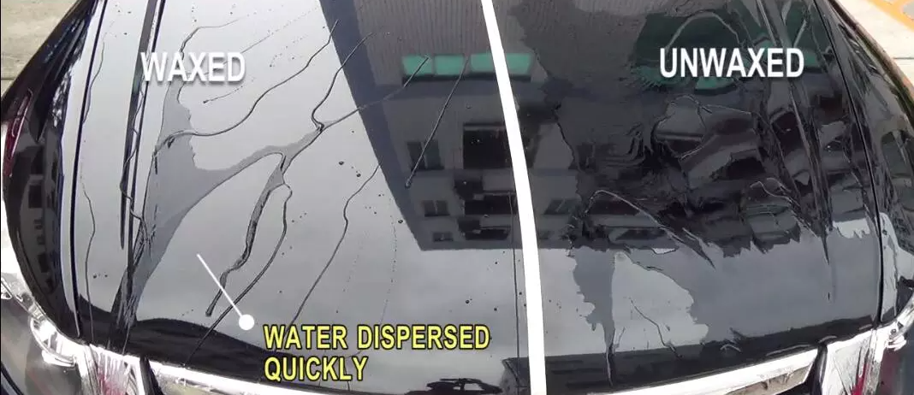

Summary
After spending some time researching and browsing detailingworld.co.uk, it became clear the old bucket, sponge and chamois is not the way to clean and look after a car.
In summary, the best process for cleaning a car and protecting the paint from scratches and swirl marks is:
- Gentle spray all over with pressure washer
- Spray car with "pre-cleaner", often in the form of snow foam, leave for 10mins
- Clean the wheels and tyres - Try to avoid getting the brakes wet, or getting cleaner products on them
- Wash off pre-clean foam with pressure washer
- Use the 2 bucket method for shampooing the car - one bucket of water for cleaning the wash mitt(s), the other bucket for "clean" shampoo water
- Gentle rinse with a pressure washer
- Use a micro-fiber drying towel drying from the top of the car to the bottom
- Note: If you drop a cloth or towel on the floor, do not use it until thoroughly washed as it will pick up grit.
Products I use
These are the products I am currently using. There is not much difference between products, a good wash is in the process, not the products used:
Exterior:
- Pressure washer - Titan TTB2200PRW 150BAR 2.2KW
- CleanYourCar - Wide Mouth Snow Foam Lance
- Bilt Hamber - Auto Snow Foam
- 2x 20 litre buckets with grit guards
- 2x microfibre wash mitts
- Chemical Guys BlackLight shampoo
- Purestar - Duplex Drying Towel
Interior:
- Dyson handheld vacuum
- Auto Finesse Total Interior Cleaner
- CleanYourCar - Wide Mouth Snow Foam Lance
- Auto Finesse - Crystal Glass Cleaner
- Leatherique Rejuvenator / Prestine Clean for leather
- Purestar - Speed Polish Light Towels


Clay / Polish / Waxing
This is something to do on an as needed basis, normally once or twice a year.
Clay bar
A clay bar is used to "decontaminate" the clear (top) coat of the paint. This process is done before polishing or applying wax to ensure the surface is smooth and clean.
To see if this is needed, put your hand in a plastic sandwich bag and gently wipe your hand over the paint. If it feels like the paint has a grainy surface, it needs a clay bar to remove the contaminants as these could damage the clear coat, or paint when polishing, or prevent the wax from being applied properly. A well applied wax can last months, otherwise it might only last a week or two.

Polishing
Polishing is done after claying the car and is done to remove small scratches and swirl markets in the clear coat. Most polishes provide a two step process on the clear coat:
- Cut - This is the abrasive stage (like sanding), eventually the abrasive parts breakdown to allow the next stage.
- Polish - This creates a fine finish to smooth out the abrasion and leave a smooth finish.
The process of polishing will remove an amount of clear coat, therefore there is a limit to how often it can be done. Once a year is probably a good basis assuming you avoid machine car washes and stick to the 2 bucket wash method.
Polishing before and after:

Waxing
Waxing provide a deep shine to the paint, provides a hydro-phobic property to the paint, a protective barrier to the paintwork and makes cleaning easier.
Waxing is best done when the paint has been "decontaminated" as it will last longer. Most waxes will last around 3 months, synthetic waxes 6 to 12 months. A ceramic coating (different to wax) can last 3 years.
